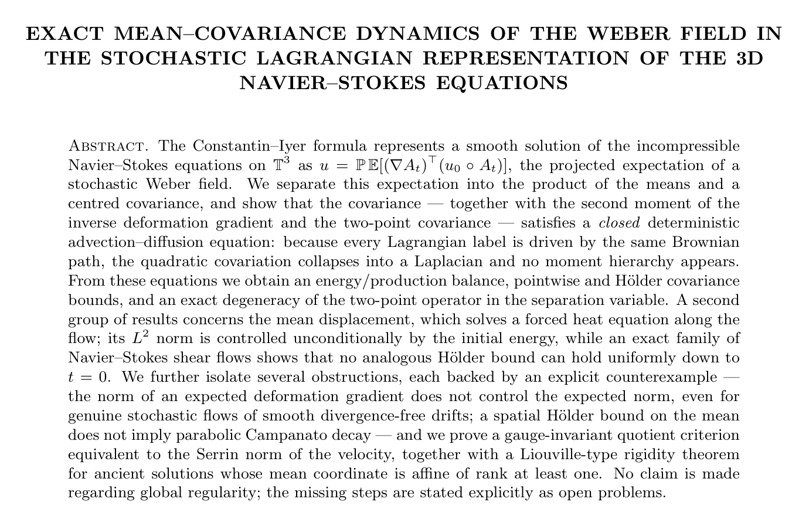

Title and abstract
Exact mean-covariance dynamics of the Weber field in the stochastic Lagrangian representation of the 3D Navier-Stokes equations
三维 Navier–Stokes 方程随机拉格朗日表示中 Weber 场的精确均值–协方差动力学
原论文标题与摘要原文摘录；保留摘要中的条件与限制。 来源：arXiv:2608.16915v1，PDF 第 1 页，Title and abstract。